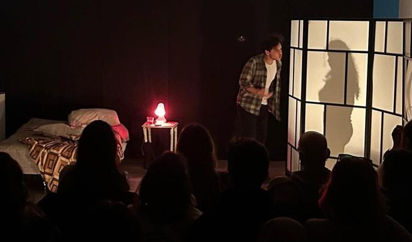
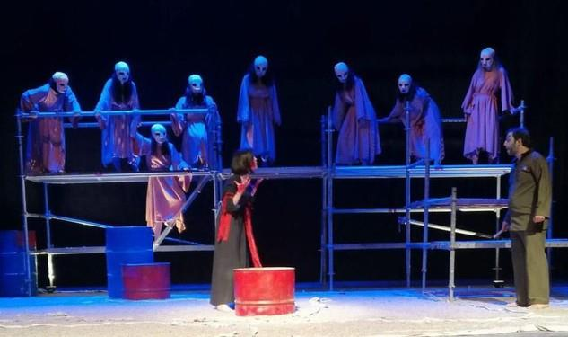
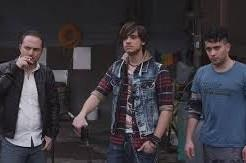
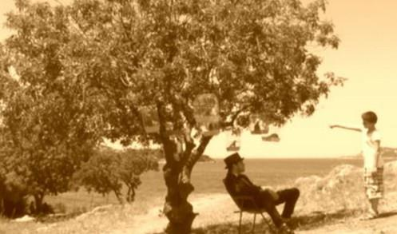

İki Edebi Dost
Karart Kültür Sanat · Oyun yazarı / Oyuncu
Oyunculuk, dramaturji, proje geliştirme, yönetmenlik ve reji deneyimleri.
Ali Taylor’ın metninin Tuğrul Tülek tarafından çevrilip uyarlanarak yönetildiği DOT yapımında oyuncu. Oyuncu kadrosunda Mehmetcan Mincinozlu, Onur Öztay ve Aykut Akdere yer aldı.


Rebekka Kricheldorf’un metni, Oğuz Utku Güneş rejisiyle Mam’Art Tiyatro yapımı olarak sahnelendi. Onur Öztay oyuncu kadrosunda yer aldı.
Karart Kültür Sanat · Oyun yazarı / Oyuncu
Mam’Art Tiyatro · Oyuncu · Yön. Oğuz Utku Güneş
DOT · Oyuncu · Yön. Tuğrul Tülek
DOT · Dramaturji ve Proje Ekibi · Yön. Murat Daltaban
DOT · Oyuncu · Yön. Murat Daltaban
DOT · Dramaturji ve Proje Ekibi · Yön. Murat Daltaban
Oyuncu · Yön. Haldun Dormen
Tiyatro Komedi · Oyuncu · Yön. Haldun Dormen
MSM Oyuncuları · Oyuncu · Yön. Haldun Dormen
MSM Oyuncuları · Oyuncu · Yön. Haldun Dormen
MSM Oyuncuları · Oyuncu · Yön. Müjdat Gezen
MSM Oyuncuları · Oyuncu · Yön. İlker Ayrık



David Greig · Yönetmen · Tiyatro Lab
Mark Ravenhill · Süpervizör / Yönetmen · Tiyatro Lab
David Greig · Lena Kitsopoulou · Lucy Kirkwood · Süpervizör · Tiyatro Lab
Tracy Letts · Süpervizör / Yönetmen · Tiyatro Lab
Jeffrey Hatcher · Süpervizör · Tiyatro Lab
Sofokles · Yönetmen · Tiyatro Lab
Müjdat Gezen · Yönetmen
Turgut Özakman · Yönetmen
Ray Cooney · Yönetmen
Ray Cooney · Yönetmen · Nişantaşı Üniversitesi Tiyatro Topluluğu
Yılmaz Erdoğan · Yönetmen · Nişantaşı Üniversitesi Tiyatro Topluluğu
Reji Asistanı · Yön. Haldun Dormen
Reji Asistanı · Tiyatro İstanbul · Yön. Gencay Gürün
Milliyet Sanat 2013 “En İyi Oyun” adayı ve Radikal 2013 “En İyi Oyun” adayı olarak CV kayıtlarında yer alan yapım; Onur Öztay oyuncu kadrosunda.
17. Uluslararası İstanbul Tiyatro Festivali katılımcısı; Onur Öztay oyuncu.
Uluslararası Van Gölü Film Festivali, 26. Ankara Uluslararası Film Festivali, 51. Antalya Altın Portakal Film Festivali ve 34. İstanbul Film Festivali yarışma/seçki kayıtları; Onur Öztay oyuncu.
48. Antalya Altın Portakal Film Festivali Kısa Film Yarışması; Onur Öztay senarist ve genel sanat yönetmeni.

